At the beginning, there is a dialog to allow the users to choose different maps. There are 3 maps at the moment Los Angeles, Singapore and Sahara. Each map has a distinct characteristic, and the users will have to apply different strategies.
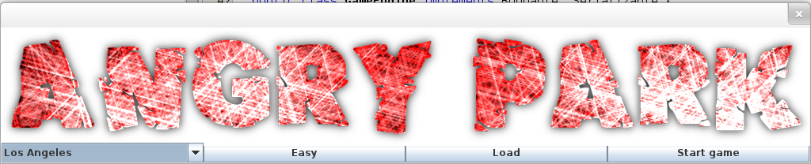
Each map then has 2 levels Hard and Easy. Some features are only enabled for certain levels. In addition, the users are provided with a load function to load any previous games.
After choosing suitable map and level, the users will be presented with a window with the game map to the left and the game features to the right
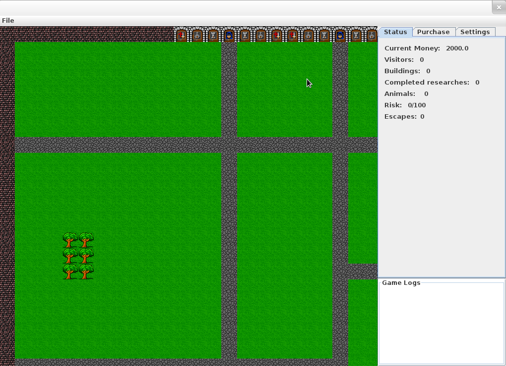
The status panel shows the current game status. The risk label shows the risk value of the park. When it reaches the maximum value, the game will be ended. The escape label shows how many times the animals escape from the cage. When it reaches some value, the user will lose the game.
Beneath the status panel is the log panel, most of the events of the game will be shown in this panel.
Next to the status tab is the purchase tab which contains many options for purchasing buildings, staffs and researches.
In the building tab, there is a list of all available buildings. Buildings have different price and purposes. There is also one building called Cage which is used for buying animals.
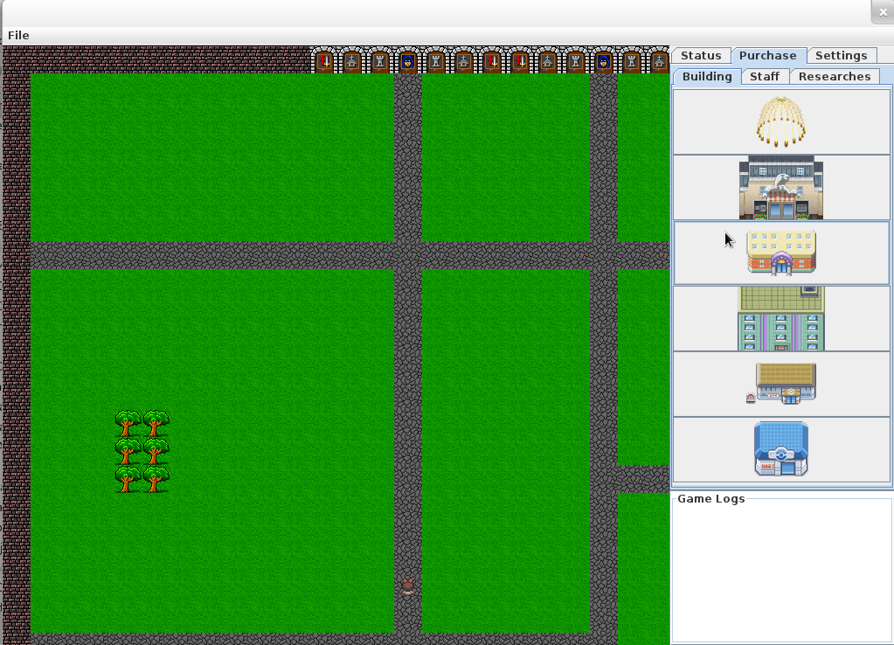
In order to buy animals, the players must buy cages, after buying a cage, a dialog will be displayed to choose the animal.
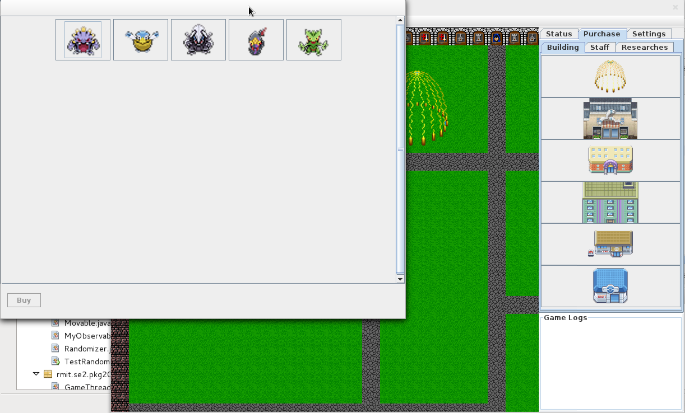
After choosing animal, a nice cage with the animal inside will be built, and the visitors can enjoy the park.
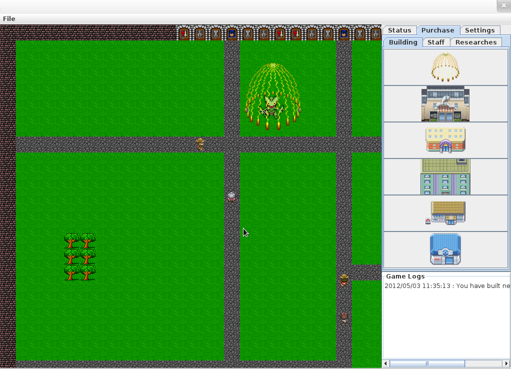
Having animals is pretty good, but then, they need to be fed. There are 2 kinds of food, normal foods, which are not risky, and illegal foods which are risky. Animals will prefer illegal food. If they are not fed, they will escape and eat people.
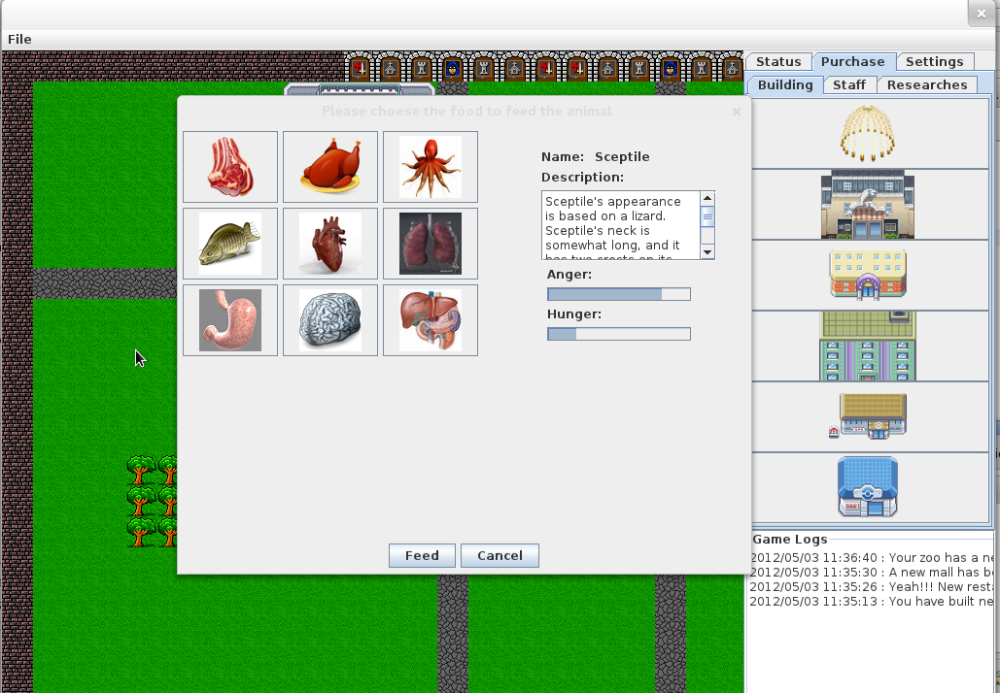
Initially, the game starts with some animals. However, the players can also research new animals in order to attract more guests into the park. Each research will need a certain amount of time to be completed.
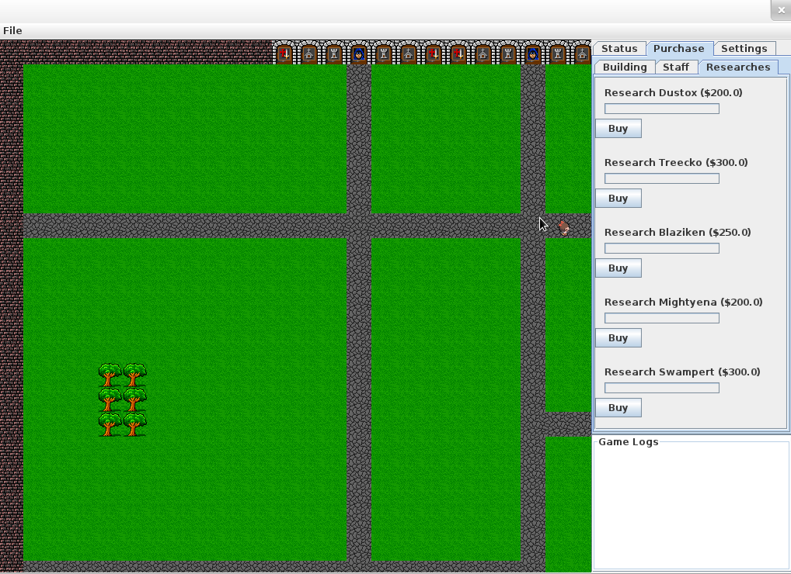
Purchasing staffs to look after the animals will keep them well feed and not to escape from the cage. However, the player will lose money automatically after a period of time.
There is also another type of staff which is clown. The clowns will keep the guests happy and if the guests are happy, they are willing to pay more.
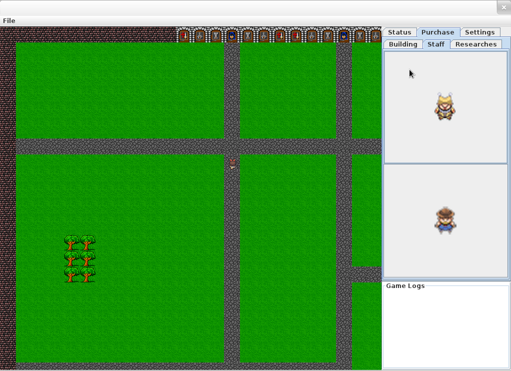
Some buildings can be updated. After updating the building will attract more guests.
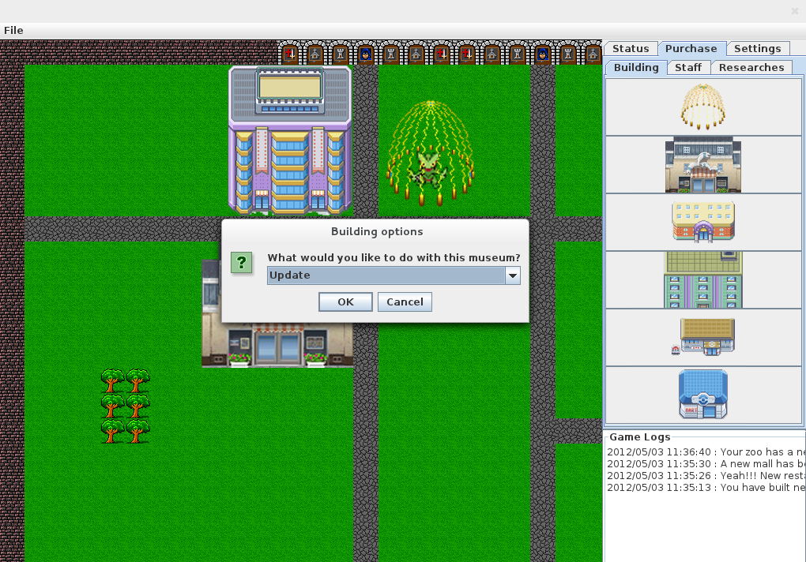
Every building can be sold to get back the money. The money that is sent back to the pack will be calculated based on the level.
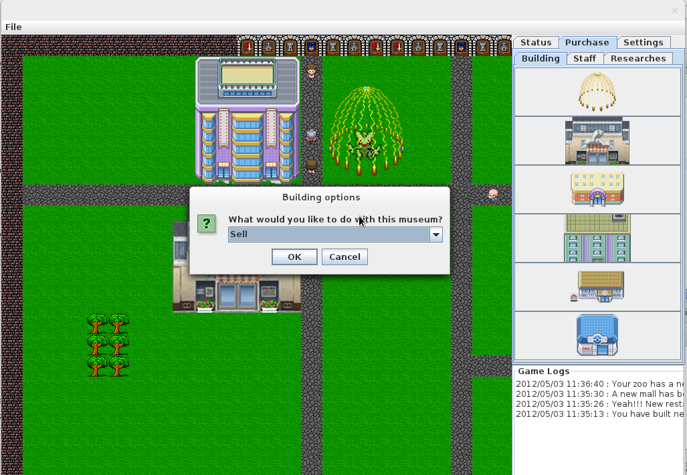
The final tab is game settings which contains several options for the players
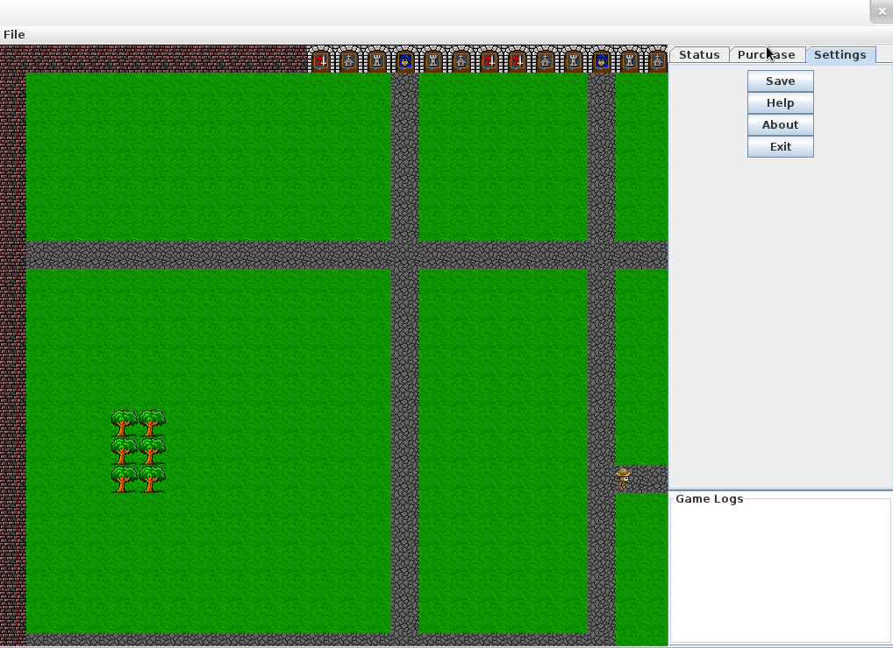